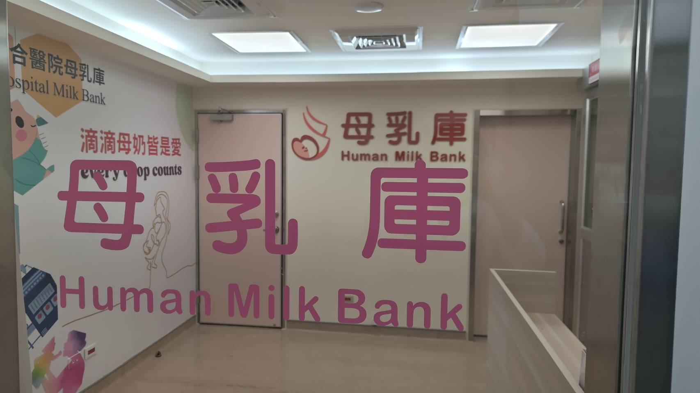

06
母乳支持・婦幼母乳庫
Smart Human Milk Bank
一滴母乳，從來不只是食物，是一份愛的延續。我們用最先進的科技，守護這份最自然的給予。

19
06
智慧母乳庫 從一滴母乳開始的科技
2025 年遷址二棟大樓 3 樓・母乳庫 20 週年
Smart, Traceable, Trustworthy
對於早產、無法親餵或母乳不足的嬰兒而言，捐贈母乳是不可替代的生命營養來源。母乳庫運作高度精密，從篩檢、收集、滅菌到配送，每一道流程都關係到嬰兒的安全與健康。
2025 年，婦幼母乳庫遷至二棟大樓 3 樓，全面更新設備與動線，導入步入式冷儲、全自動化監測與智慧化管理，以科技強化每一個環節的精準與可追溯性，守護每一滴母乳的安全與價值。
RFID, walk-in cold storage, 24/7 monitoring — twenty years of human milk banking, now smart end to end.
01
RFID 智慧奶瓶 全程追蹤
掃碼即知批次與來源
02
步入式冷儲
獨立冷儲空間擴容
03
全自動化監測
溫度全天候即時告警
04
智慧化管理
RFID 全程可追溯
2025 母親節 婦幼母乳庫 20 週年──二十年來，守護早產兒與無法親餵的家庭
20